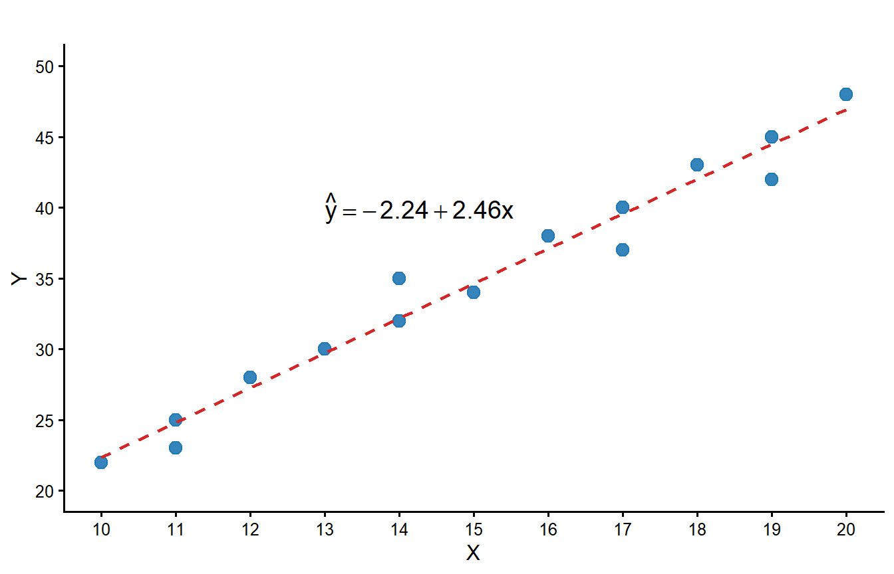

7 Simple Linear Regression
We all know the equation of straight line:
\[y=mx+c\]
Which shows deterministic relation between x and y. But in reality relation between x and y may not be deterministic; rather random/ stochastic. For example for same input of x we may find different output y.
Here comes the concept of regression. More precisely if \(Y\) is a random variable which depends on a fixed variable \(x\) (independent variable) with some extent then the stochastic relation between \(x\) and \(Y\) is represented as:
\[Y=A+Bx +e \tag{7.1}\]
Where \(e\) is the error term and assumed to be normally distributed with mean 0 and variance \(\sigma^2\).
The equation Equation 7.1 is called the Simple Linear Regression (SLR).
Our goal is to estimate the parameters \(A\) and \(B\) from sample data. One approach is to estimate \(A\) and \(B\) by minimizing error sum of squares, alos known as Least Square estimate by the following formulas:
Estimator of \(B\):
\[b=\frac{\sum xy-n \cdot \bar x \cdot \bar y}{\sum x^2-n\cdot \bar x^2}=\frac{S_{xy}}{SS_x} \ \ \ \ (say)\]
Estimator of \(A\):
\[a=\bar y-b \bar x\]
After having the value of \(a\) and \(b\) from sample data our estimated simple linear regression line becomes:
\[\hat y=a+b x\]
An scatter plot with estimated /fitted regression line:
Example
Consider a delivery company estimating fuel used for a trip from the distance traveled.
Let (x) be distance in hundreds of kilometers, and (y) be fuel used in liters:
| Trip | Distance (x) (100 km) | Fuel (y) (L) |
|---|---|---|
| 1 | 1 | 8 |
| 2 | 2 | 11 |
| 3 | 3 | 13 |
| 4 | 4 | 17 |
| 5 | 5 | 18 |
| 6 | 6 | 22 |
Estimation
We have to estimate the regression equation
\[ \hat{y}=a+bx. \]
The sample means are
\[ \bar{x}=\frac{1+2+3+4+5+6}{6}=3.5, \qquad \bar{y}=\frac{8+11+13+17+18+22}{6}\approx14.833. \]
The sum of cross-products and the sum of squared deviations for (x) are
\[ S_{xy}=\sum xy -n \bar{x} \bar{y}=48.5 \ \ (plz. check) \]
\[ SS_x=\sum x^2-n \bar{x}^2=17.5. \]
Therefore, the estimated slope is
\[ b=\frac{SS_{xy}}{SS_x} =\frac{48.5}{17.5} \approx2.77. \]
The estimated intercept is
\[ a=\bar{y}-b\bar{x} =14.833-(2.77)(3.5) \approx5.13. \]
So the estimated regression equation is
\[ \boxed{\hat{y}=5.13+2.77x}. \]
Prediction:
For a trip of (450) km, (x=4.5). The predicted fuel use is
\[ \hat{y}=5.13+2.77(4.5)\approx17.6\text{ liters}. \]
The model estimates that the trip will use about 17.6 liters of fuel.